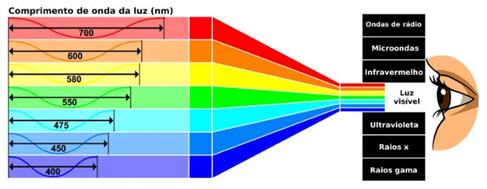
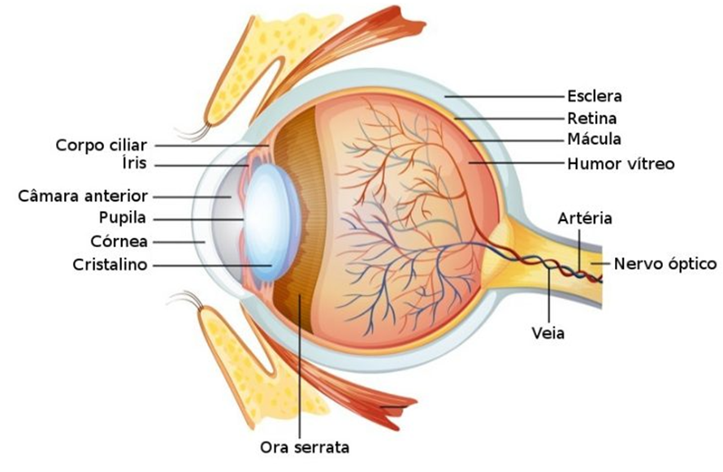

Parte 1: Testes de Acuidade Visual na Comunidade Externa
Na primeira etapa do trabalho, os integrantes aplicaram o teste de visão da Zeiss em
si mesmos e em dois convidados da comunidade externa à UFABC cada. O teste está disponível totalmente em inglês, mas possui instruções simples
a serem executadas. Além disso, é composto por cinco etapas, detalhadas a seguir:
Acuidade Visual: O primeiro teste tinha como proposta avaliar a acuidade visual do participante, ou seja, sua
capacidade de detectar pequenos detalhes, uma habilidade que varia gradualmente com o tempo, o que torna mais difícil perceber mudanças,
sendo recomendado, portanto, o acompanhamento regular com um oftalmologista. Para isso, é utilizada a figura do anel (ou C) de Landolt,
que consiste em um anel com uma única abertura, que pode estar localizada em oito possíveis posições. Durante o teste, aneis em diferentes
tamanhos são apresentados ao participante, que deve selecionar, em um gabarito, a posição da abertura. Esse processo é realizado duas vezes,
sendo que, em um primeiro momento, o olho esquerdo é fechado para avaliação do direito, e, em seguida, é realizada a troca. Apesar da simplicidade
do procedimento, algumas vezes a figura apresentada é muito pequena, sendo difícil, portanto, identificar a abertura; nesses casos, ocorreram
alguns acertos por sorte. Por fim, foi possível notar que, mesmo com erros nestas situações mais difíceis, é possível obter o resultado máximo.
Contraste Visual: É a habilidade de identificar diferentes tons de cinza, sendo determinante para a capacidade de
visão à noite. Assim como a acuidade visual, o contraste varia gradualmente com o tempo. A única diferença entre os testes é que
ao invés de variar o tamanho do anel de Landolt, sua cor alterna a cada estágio, em uma escala de cinzas. Em alguns momentos, o anel se mistura
com o fundo branco da tela, sendo muito difícil, portanto, identificar a abertura. Do mesmo modo que no teste anterior, alguns erros nos casos
mais difíceis não impedem uma boa avaliação final. Além disso, para alguns participantes, após alguns estágios, o foco da visão diminuía,
sendo necessário focar novamente.
Percepção de Cores: A capacidade de diferenciar cores e tons é um dos princípios mais básicos da visão humana, e a
falta dela pode indicar algum grau de daltonismo, condição normalmente herdada geneticamente. O teste aplicado é baseado no trabalho do
Dr. Shinobu Ishihara, oftalmologista japonês que publicou seu teste em 1917, no qual são apresentados círculos coloridos compostos por outros círculos
menores, sendo que alguns círculos de tons semelhantes estão agrupados para formar algum número. Cabe ao examinado identificar o número em questão,
tarefa que só deve ser possível para participantes com visão normal. No teste realizado, foi possível observar uma peculiaridade, pois, para diversos
participantes, foram apresentadas as mesmas figuras, e todas foram interpretadas corretamente, exceto pela última; isso foi suficiente
para todos serem avaliados com o nível intermediário.
Astigmatismo: É uma imperfeição na curvatura da córnea ou da lente do olho, e resulta em visão borrada ou distorcida,
podendo causar dores de cabeça e dificuldade de enxergar à noite; também pode piorar com a idade, mas pode ser remediada com o uso de óculos
ou lente de contato. O teste também é realizado separadamente para os dois olhos, e consiste em exibir um semicírculo com linhas pretas e perguntar
ao participante se todas as linhas são de mesma cor. Uma resposta negativa pode indicar astigmatismo, e a avaliação apresentada ao final é a pior possível.
Uma vez que este teste é baseado em uma única pergunta, um erro de clique no botão ou até mesmo uma indecisão do usuário pode resultar em um
diagnóstico falso. Além disso, aplicou-se o teste em uma pessoa diagnosticada clinicamente com astigmatismo, que não percebeu
diferença na cor das barras, tanto com e sem seus óculos. Portanto, nota-se que o teste não é eficiente, e pode ser válido procurar um
oftalmologista independentemente do resultado obtido.
Campo de Visão: A última etapa propõe avaliar o campo de visão, ou seja, o espaço no qual alguém percebe luz e detecta
objetos, que pode ser afetado por doenças oculares ou neurológicas e é importante em diversas tarefas do dia-a-dia, tais como ler, dirigir ou atividades
nas quais é usada a visão periférica. Diferentemente dos demais testes, desta vez foi especificada a distância exata que o participante deveria estar
de seu monitor (30 cm), enquanto nos outros é pedida somente "a distância de um braço", que pode ser imprecisa e varia de acordo com o tamanho da pessoa.
O teste em si avalia cada olho separadamente, e é baseado no teste da Tela de Amsler, que consiste em exibir uma grade quadriculada com um círculo
preto no centro, pedir para o participante focar a visão neste ponto e responder se este enxerga uma grade completamente regular e se alguma parte
da mesma parece distorcida ou mais escura que o restante. Novamente, é um teste com poucas questões, e é preciso deslocar sua visão da grade para
os textos com as perguntas, o que pode tirar o foco desejado
do círculo central, e interferir no teste; as perguntas poderiam ser apresentadas antes da Tela de Amsler, por exemplo. Além disso, no site é
apresentada a informação de que, quando o teste é realizado em celulares ou telas menores, a grade fica em um tamanho menor do que o recomendado,
mas este aviso não é apresentado durante o teste, e pode levar a uma conclusão imprecisa.
A tabela a seguir apresenta os resultados obtidos para cada um dos cinco testes e para todos os participantes.
| Teste | Acuidade | Contraste | Cores | Astigmatismo | Campo de visão |
| Daniel |  |  |  |  |  |
Sandra
Convidada - Daniel |  |  |  |  |  |
Mateus
Convidado - Daniel |  |  |  |  |  |
| Arthur |  |  |  |  |  |
Luana
Convidada - Arthur |  |  |  |  |  |
Ayrton
Convidado - Arthur |  |  |  |  |  |
| Vitor |  |  |  |  |  |
Simone
Convidada - Vitor | | | |  | | |
Paulo
Convidado - Vitor | | | | | | |
| Ighor |  |  |  |  |  |
Giulia
Convidada - Ighor |  |  |  |  |  |
Natalia
Convidada - Ighor |  |  |  |  |  |
| Mariana |  |  |  |  |  |
| Mariana | - | - | - | - | - |
| Convidado 1 Mariana | - | - | - | - | - |
| Convidado 2 Mariana | - | - | - | - | - |
Com isso, pode-se analisar o conjunto dos dados obtidos. O gráfico a seguir apresenta a distribuição de avaliações para cada teste (sem distinção
entre os dois olhos). Para o teste de acuidade, percebe-se que os resultados se concentraram nas avaliações "Ruim" e "Bom", sendo a maior parte positivas.
Já no teste de contraste, todos os participantes obtiveram a melhor avaliação, que poderia ser alcançada mesmo com alguns erros. Os resultados foram
todos idênticos também no teste de Percepção de Cores, com avaliação "Médio", o que confirma a inconclusividade deste teste; uma vez que este teste
é baseado em um trabalho científico renomado, conclui-se que o erro pode estar na ferramenta.
No teste de Astigmatismo, não houveram avaliações intermediárias pois, como já mencionado, o teste consiste de uma única pergunta, para a qual uma
resposta negativa resulta em uma classificação "Ruim", ao passo que "Bom" depende de uma resposta afirmativa. Por fim, no teste de Campo de Visão,
outro com poucas perguntas, novamente foram obtidas somente classificações "Bom".

Parte 2: Desenvolvimento de Projeto de Animação
Na segunda parte do trabalho, foi escolhido o tema "Sistema Visual Humano" a partir das sugestões disponibilizadas. Em seguida, foram
feitas pesquisas acerca deste assunto, e elaborada uma animação simples no Blender, baseada no conteúdo da aula de laboratório.
O sistema visual humano é um dos sistemas mais complexos da nossa anatomia. Responsável por nos auxiliar a compreender e interagir com o
ambiente ao nosso redor, utiliza uma série de mecanismos e órgãos que vão desde o globo ocular até o cérebro, onde toda a luz captada é recebida
e interpretada em uma imagem compreensível.
Antes de falar a respeito do sistema visual, se faz necessária uma breve explicação do conceito de imagem para a visão humana.
Conceitualmente, a luz é uma radiação eletromagnética, sendo transmitida através de ondas, e a amplitude e a frequência dessas ondas determinam,
respectivamente, o brilho e a cor dessa luz transmitida.
Ondas eletromagnéticas podem ter uma infinidade de frequências, porém apenas uma pequena faixa é visível ao olho humano. A essa faixa, damos o
nome de luz. As demais faixas de frequências também possuem outras utilidades em nosso cotidiano, como as ondas de rádio, raios-X, infravermelho,
entre outras.

Para enxergar uma imagem, os fotorreceptores dos nossos olhos convertem a energia destas ondas de luz em impulsos nervosos, que serão
interpretados pelo cérebro. A seguir, tem-se a anatomia do olho humano, com suas principais componentes detalhadas.

Esclera: Uma membrana mucosa, branca, que tem a função de proteger o globo ocular. Conhecida como o “branco dos olhos”;
Córnea: Uma membrana fina e transparente, que tem a função de transmitir a luz para o restante do sistema visual, além de proteger o olho;
Íris: Estrutura central do olho. Controla a entrada da luz;
Retina: Envia os sinais pelo nervo óptico através dos fotorreceptores;
Cristalino: Localizado atrás da íris, serve como uma lente natural, permitindo a focalização das imagens;
Corpo Ciliar: Responsável pela acomodação do cristalino e pela secreção do Humor Aquoso.
Parte 3: Elaboração do Questionário
Por fim, foi elaborada uma apresentação em vídeo deste trabalho para a turma (disponibilizado a seguir), além de um questionário via Google Forms
a respeito de seu conteúdo, que pode ser acessado aqui.